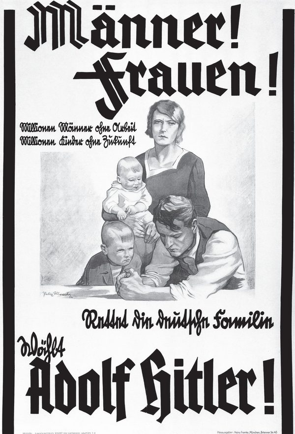
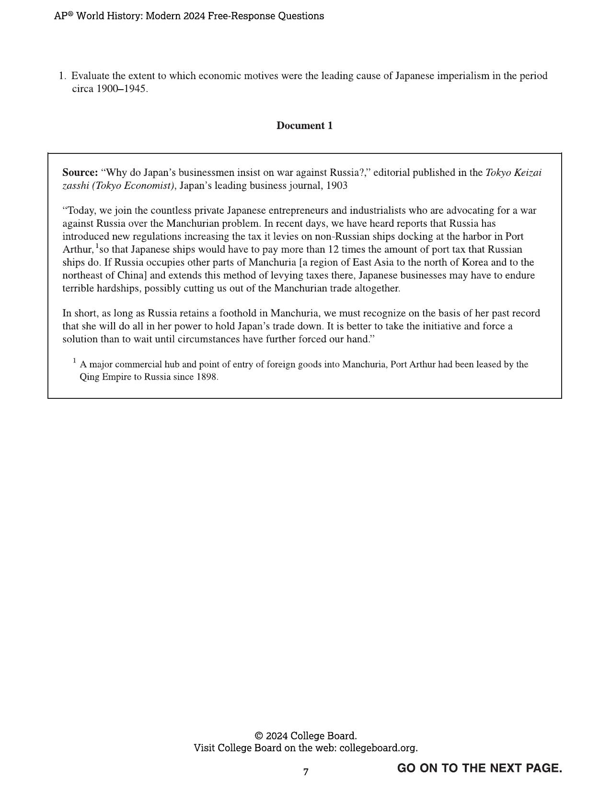
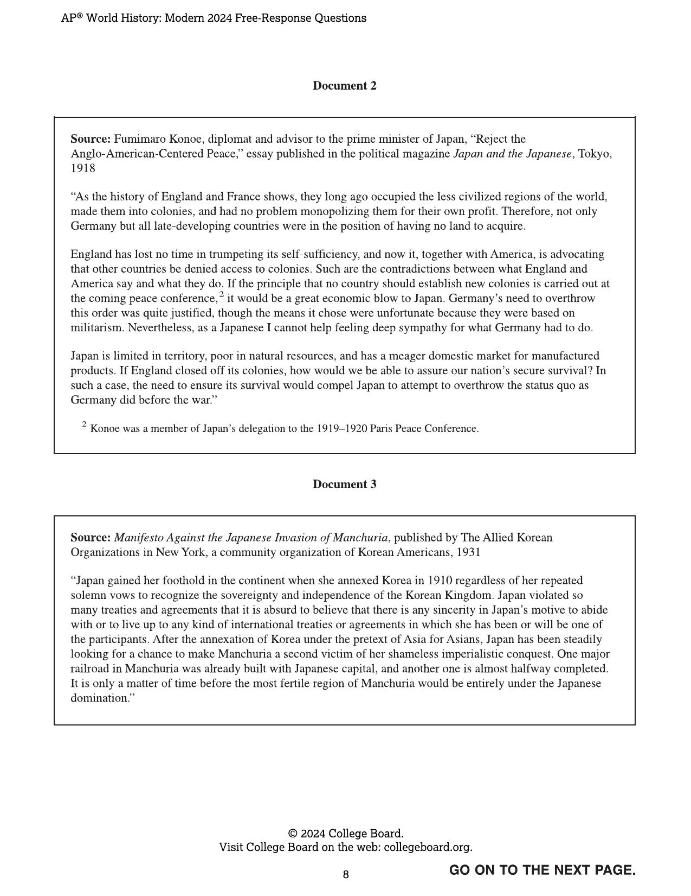
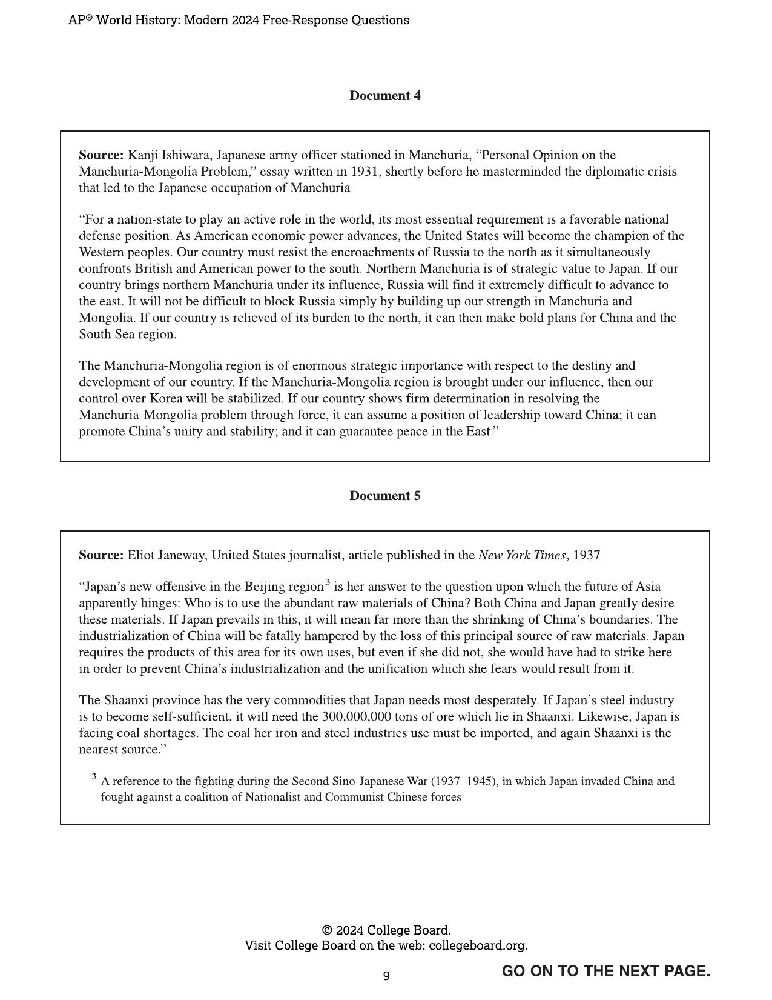
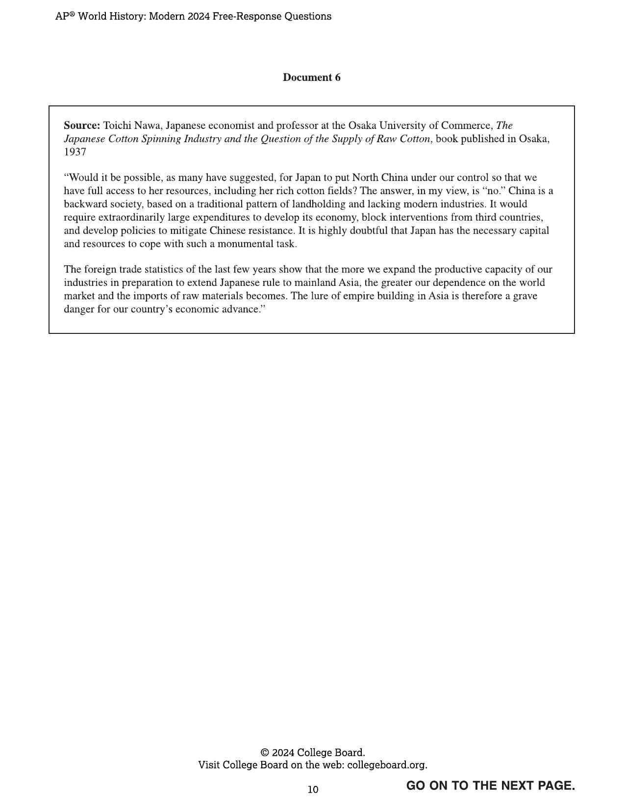
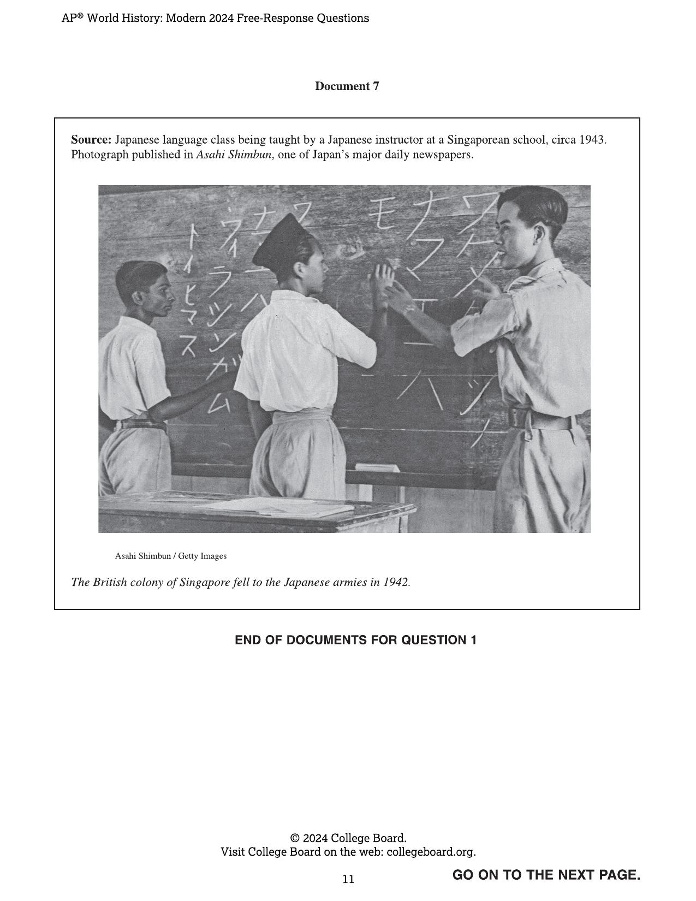

From the trenches of WWI to the mushroom cloud over Nagasaki — master every source, concept, and question before exam day.
The Age of Total War
Between 1900 and 1945, the world experienced two catastrophic global wars that together killed over 70 million people. The causes were deeply rooted in the preceding century: imperial rivalries, hyper-nationalism, arms races, and the rigid alliance systems of European great powers. When Archduke Franz Ferdinand was assassinated in Sarajevo in June 1914, these pressures detonated into the most destructive war the world had ever seen.
WWI shattered the old European order. The Ottoman, Austro-Hungarian, Russian, and German empires all collapsed. The harsh terms of the Versailles Treaty, combined with the global Great Depression of the 1930s, created the economic and psychological conditions in which fascism could flourish. Hitler's rise in Germany, Mussolini's in Italy, and militarism in Japan produced leaders willing to gamble civilization itself on conquest.
World War II was even more total than the first — civilian populations were deliberate targets. The Holocaust, the Japanese war in China, and Allied strategic bombing campaigns killed millions of non-combatants. The war ended with atomic weapons deployed against Japanese cities, inaugurating the nuclear age and setting the stage for the Cold War that would define the second half of the 20th century.
Watch Before the Exam
Full Unit 7 review videos to reinforce everything you’ve studied.
Covers WWI causes, total war, interwar period, and the rise of nationalist movements worldwide.
Covers WWII causes and conduct, mass atrocities, propaganda, and mobilization strategies.
The Story of Global Conflict
Nine turning points that reshaped the world — scroll to explore.
Ready to Master Unit 7?
Flashcards, MCQ, writing practice, and study guide — all in one place.
Key Terms & Concepts
Click the card to flip it. Use arrows to navigate or filter by topic.
Wait for the timer, then flip to check your answer · Use arrows to navigate
Write What You Know
Pick a topic, then write everything you remember for 5 minutes. When time's up, we'll show you all the content so you can compare.
Stimulus-Based Questions
AP-authentic questions using the exact stimuli from your test and study materials.
SAQ, DBQ & LEQ
Real AP exam prompts from the official College Board scoring materials. Write your response and get instant feedback scored against the actual rubric.

National Socialist (Nazi) Party election poster, Germany, 1932. Text reads: “Men! Women! Millions of men without work. Millions of children without a future. Save the German family. Vote Adolf Hitler!”
B. Explain ONE way the image illustrates the economic situation of the period after the First World War. (1 point)
C. Explain ONE way the rise of the German National Socialist Party led to the Second World War. (1 point)
Evaluate the extent to which economic motives were the leading cause of Japanese imperialism in the period circa 1900–1945.





“In the period after 1900, the role of the state in the economy varied, with many states adopting policies to control or manage their economies.
Develop an argument that evaluates the extent to which one or more states controlled their economies in this time period.”
Practice One Skill at a Time
Isolate each rubric point, see what earns it, and get targeted feedback on just that skill.
- Makes a historically defensible claim — does not merely restate or rephrase the prompt
- Establishes a line of reasoning: gives a reason for the claim OR sets up analytic categories
- Use an evaluative adverb: significantly, primarily, largely, fundamentally, to a great extent, to a limited extent
- Can appear in the intro OR conclusion
- Describes a broader historical context — more than a phrase or one-sentence mention
- Relates to events/developments/processes before, during, or after the time frame of the prompt
- Must be relevant to the prompt — not just any historical background
- Must include elaboration connecting the context to the topic
- 1 pt: Provide at least two specific historical examples relevant to the prompt
- 2 pts: Use those examples to support an argument — each piece connects to a claim with explanation
- Evidence must be specific: names, dates, policies, events — not vague generalizations
- Must be described AND explained — don’t just list facts
- For at least 2 documents, explain how the document’s Historical situation, Audience, Purpose, or Point of View is relevant to an argument
- Must explain HOW or WHY — not just identify. The “which means” anchor forces the second move: “[feature] is [X], which means [consequence for argument].”
- The explanation must connect to your argument about the prompt — the sourcing sentence must do work, not just exist
Step 3 — write HAPP analysis for two different documents from the DBQ above. Label each (e.g. “Doc 1:” and “Doc 4:”). You can use different lenses for each.
- Qualify or modify your argument — acknowledge nuance, exceptions, or counterevidence
- Analyze multiple causes/effects, multiple variables, or diverse perspectives
- Make insightful connections across time or geography linked to your argument
- Must be part of the argument, not just a closing phrase
- Part A — Identify: 1–2 sentences. State a specific political purpose of the Nazi poster.
- Part B — Explain: 2–3 sentences with causal language. HOW does the image illustrate post-WWI economic conditions?
- Part C — Explain: 2–3 sentences with causal language. ONE way the Nazi Party’s rise led to WWII.
Text reads: “Men! Women! Millions of men without work. Millions of children without a future. Save the German family. Vote Adolf Hitler!” — Nazi Party, 1932
Unit 7: Global Conflict After 1900
Click each topic to expand the full summary and key terms.
Mr. T’s FRQ Playbook
Everything you need to write the SAQ, DBQ, and LEQ on exam day.
📝 SAQ — Short Answer
Answer ONLY what is asked. No intros, no conclusions.
- Identify = 1–2 sentences
- Describe = 2 sentences
- Explain = 2–3 sentences with "because"
You must answer Q1 and Q2. Choose between Q3 or Q4 for the last one.
📄 Thesis Formula
Works for both DBQ and LEQ. Must be historically defensible with a line of reasoning.
Adverb evaluates extent: significantly, fundamentally, minimally, primarily, negatively…
🕐 Contextualization
A historical process before/during the prompt period that led to the topic.
- Don't start at "the dawn of man"
- Stay within ~50 years of the prompt
- Must be 2–3 full sentences
- Explain HOW it connects to the prompt
📄 DBQ Evidence
- Points 1–2: Accurately use 4+ of 7 docs.
- Point 3: Outside evidence — a relevant fact NOT in the documents
🔍 HIPP — Sourcing
Apply to at least 2 documents. Pick ONE element per doc.
Historical Situation
Intended Audience
Point of View
Purpose
End with: "This alters/supports my understanding because…"
📝 LEQ — Long Essay
No documents — everything from memory.
- Causation: What caused / what resulted
- CCOT: What changed and what stayed the same
- Comparison: Similarities and differences
✦ Explain both cause AND effect, or both similarity AND difference
✦ Connect across time periods or geographic areas
✦ Use all 7 documents effectively (DBQ) or HIPP 4+ documents
A counterargument paragraph can earn complexity — but only if it is a full paragraph with evidence, not just a sentence.
Go Beyond Identification
Don't just name the source feature — explain why it matters for your argument. Practice the "which means" move.
Test Your Knowledge
Choose a game mode to review Unit 7 with your class or on your own.
Class Slides
Your full lecture slides alongside topic-by-topic analysis notes. Use these to review key arguments, vocabulary, and connections.
Visual Sources & HIPP Analysis
7 AP-authentic visual stimuli — photographs, lithographs, maps, and paintings. Study each source, answer the AP question, then complete your own HIPP analysis and compare to the model.
Progress Dashboard
Enter the teacher password to view student data and export reports.